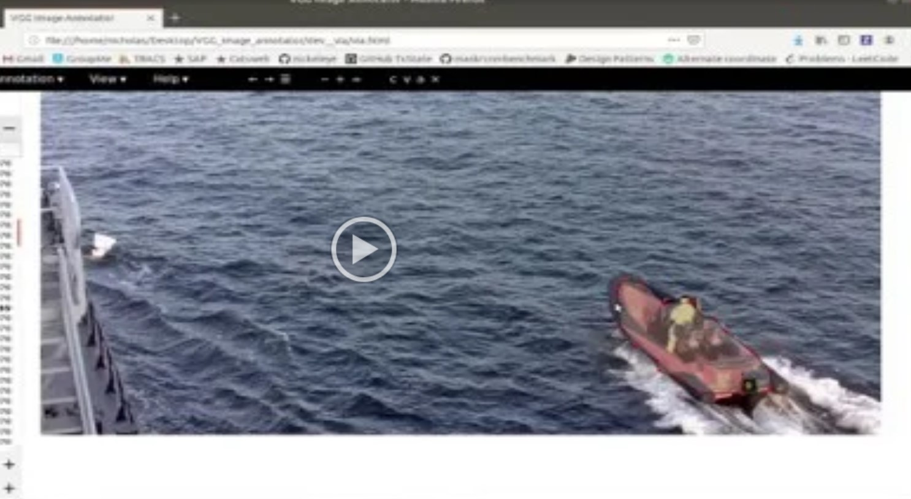

Tool: Via for video re-annotation
More on the work
Link to the page and people Import, Export, and Editing of any Cocoized Annotations; isualization of annotations to insure integrity of datasets; Edit annotations and save for future training
>
Tool: Boxes2Mask Tool
See
Bo's research focus is small sample learning in unstructured data.